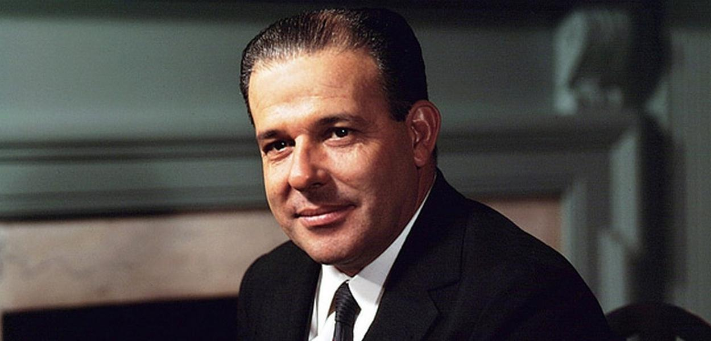

DITADURA MILITAR NO BRASIL
A ditadura militar no Brasil ocorreu por meio de um Golpe de Estado Civil-Militar em 1964 e se desenvolveu através de fases de crescente autoritarismo e repressão, durando 21 anos (1964 a 1985).
O Brasil vivia um período de intensa polarização política e crise econômica sob o governo do presidente eleito, João Goulart (Jango).

O cenário antes de 1964 era de grande polarização no Brasil sob o governo do presidente.
O presidente, que havia assumido após a renúncia de Jânio Quadros, defendia as Reformas de Base (agrária, urbana, eleitoral, etc.), visando reduzir desigualdades e promover o desenvolvimento.
A Oposição: Essas propostas foram vistas como uma ameaça "comunista" por setores conservadores:
- Militares: A alta cúpula via Jango como fraco e temia a subversão e as manifestações populares que o apoiavam.
- Elites: Grandes proprietários de terra, empresários e banqueiros opunham-se às reformas que afetavam seus privilégios.
- População de Classe Média: Mobilizada por manifestações como a "Marcha da Família com Deus pela Liberdade", que pedia a deposição de Jango e a defesa da "moral cristã".
- O Estopim: Em março de 1964, a situação atingiu o pico após o Comício da Central do Brasil (onde Jango reafirmou seu compromisso com as reformas) e a Revolta dos Marinheiros (quando Jango não puniu marinheiros rebelados, irritando a alta cúpula militar).
O Golpe (31 de Março a 9 de Abril de 1964) O golpe foi uma ação rápida e coordenada entre setores militares e civis:
- A Rebelião: Na madrugada de 31 de março de 1964, tropas de Minas Gerais, sob a liderança do General Olympio Mourão Filho, iniciaram a marcha em direção ao Rio de Janeiro.
- A Adesão: Outras unidades militares aderiram rapidamente, e a cúpula das Forças Armadas decidiu apoiar o movimento contra Jango.
- A Saída de Jango: Sem apoio militar efetivo e buscando evitar um banho de sangue, João Goulart deixou o Rio de Janeiro e seguiu para o Rio Grande do Sul, exilando-se no Uruguai em 4 de abril.
- A Declaração de Vaga: Em 2 de abril, o Congresso Nacional, sob pressão, declarou a Presidência da República vaga, mesmo com Jango ainda em território nacional. Ranieri Mazzilli, o presidente da Câmara, assumiu interinamente.
- A Institucionalização (AI-1): Em 9 de abril, o "Comando Supremo da Revolução" (militares) editou o Ato Institucional nº 1 (AI-1) Este decreto deu aos líderes do regime o poder de:
- Suspender garantias constitucionais.
- Cassar mandatos e suspender direitos políticos dos opositores (iniciando os expurgos).
- Eleger o próximo presidente indiretamente.
- O Primeiro Presidente: Em 15 de abril, o General Humberto de Alencar Castelo Branco foi eleito indiretamente pelo Congresso (já "limpo" de muitos opositores) para ser o primeiro presidente do regime.